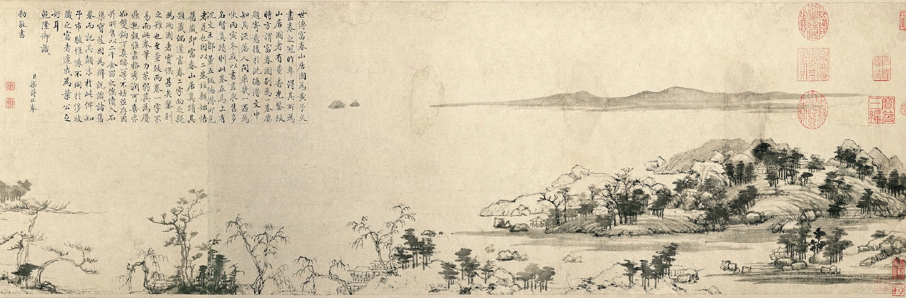

Publications
Journal Articles
- A Buddhist Case for Ontological Idealism: Two Arguments Against Mind-Independent Existence in Xuanzang’s Cheng Weishi Lun, PhilArchive
- Susan Sontag and Our Duties Towards Photographs of Violence and Suffering, PhilArchive
- The Early Development of Kant's Practical Notion of Belief, PhilArchive
- On the Epistemic Instrumentalist Solution to the Combinatorial Problem, PhilArchive
- Kant on Propositional Content and Knowledge, PhilArchive
Book Chapters
- Hegelian Sufficientarianism and Limitarianism as an Anti-Colonial Theory of Justice (with Joshua Folkerts),
- On the Secondary Quality Analogy,
- Hegel's Justification of Private Property, Penultimate Draft
Book Reviews
- Review of Paul Morrow, Seeing Atrocities: Ethics for Visual Encounters with Intolerable Harms,
- Review of Till Hoeppner, Urteil und Anschauung: Kants metaphysische Deduktion der Kategorien,
- Review of Gabriele Gava, Kant's Critique of Pure Reason and the Method of Metaphysics,
Dissertation
Towards a Hybrid Reading of Kant's Transcendental Idealism
In my dissertation, I propose a novel reading of Kant's transcendental idealism that I call the hybrid reading. Roughly put, transcendental idealism is the doctrine that the objects we can experience, which Kant calls appearances, are in some way mind-dependent, and that we cannot know how things are in themselves. Current interpretations of this doctrine fall into two main camps. Metaphysical readers take transcendental idealism to posit distinct sets of beings that occupy different levels of reality: things in themselves are what are ultimately real, while appearances are less real. Epistemic readers, in contrast, take transcendental idealism to be a doctrine about knowledge. More specifically, they interpret it to amount to the thesis that there are certain a priori conditions under which alone knowledge is possible for us, and we cannot know anything about things that do not conform to those conditions.
My interpretation of Kant's transcendental idealism combines elements from both of these two camps and steers a middle course between them. On one hand, I share the view of metaphysical readers that transcendental idealism offers a description of reality as having a hierarchical structure, in which things in themselves are metaphysically more fundamental than appearances. But this description, on my reading, is not a standpoint-independent truth. Instead, it is something we must think and hold to be true from the human standpoint, which is defined by the conditions of our knowledge, i.e., the categories and space and time. To put it differently, I agree with epistemic readers that things in themselves are not how the world really or ultimately is from "the view from nowhere", but merely what we posit in thought as the objects that make up the mind-independent material reality underlying appearances. I thus read transcendental idealism as primarily concerned with providing a radically anthropocentric metaphysics: while it aims to describe the way the world is, it also regards any human metaphysical endeavor as fundamentally dependent upon and limited by the human conditions for knowledge. In contemporary terms, my hybrid reading takes Kant's transcendental idealism to be a form of meta-metaphysical idealism that concerns specifically the limit of metaphysics as a human enterprise.
This dissertation is organized around four questions that are central to the debate between metaphysical and epistemic readers, which I identify in the Introduction. These questions include whether Kant takes appearances and things in themselves to be two distinct sets of beings, whether he regards things in themselves to be ultimately real independently of any standpoint, whether he allows any knowledge of things in themselves, and whether he takes our empirical objects to be mind-dependent. In Chapter 1, I present the answers to these four interpretive questions by two of the most famous representatives of metaphysical and epistemic readers, namely Karl Ameriks and Henry Allison. Then, in Chapter 2, I show that Kant takes appearances and things in themselves to be two distinct sets of beings by arguing against Allison's view to the contrary. In Chapter 3, I argue against the view of Ameriks and other metaphysical readers that things in themselves are how the world ultimately is from "the view from nowhere". I suggest that, for Kant, we cannot even think about what is ultimately real independently of any standpoint, because our thinking is fundamentally limited by both the sensible and the intellectual conditions for human knowledge. In Chapter 4, I show that Kant forbids us to have any knowledge about things in themselves. I contend, however, that he nevertheless allows us to have some practically justified beliefs, which he names Glauben, about things in themselves. Finally, in Chapter 5, I argue that Kant holds a robust idealism about appearances. Through a close reading of the B-Deduction, I show that, for Kant, our understanding and its acts are what give our empirical objects or appearances their form.

In Progress
Under Review
- A paper on the role of the Doctrine of Method in the Critique of Pure Reason draft available upon request
- A paper on Kant's doctrine of Noumenal Ignorance draft available upon request
In Progress
- Kant on the Inescapability of the Human Standpoint and the Limit of Metaphysics draft available upon request
- Kant's Theory of Reasons for Belief draft available upon request
- Hegel's Implicit Solution to the Problem of Poverty
- Argument from Ignorance and Buddhist Epistemological Pragmatism
- Kant on Sense and Reference
- Kant on Sinn and Bedeutung
- Dharmottara's Theory of Propositional Content
Translation
- Xuanzang's Cheng Weishi Lun, Book I Draft Translation